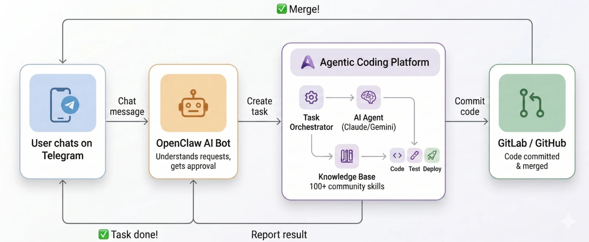
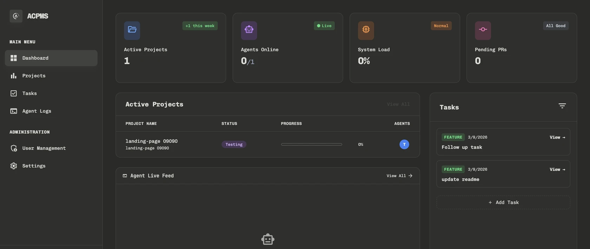
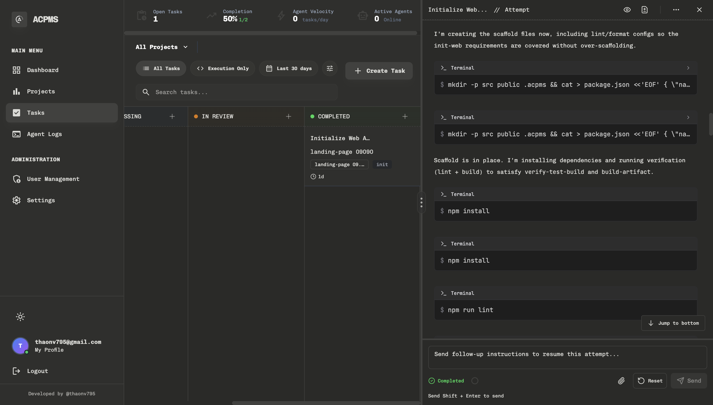
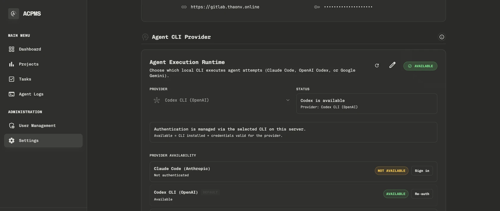

Requirements, tasks, and code logs stay linked forever.
OPEN SOURCE • HUMAN-IN-THE-LOOP • MULTI-AGENT
Agentic Coding Project Management System
Shape the vision. Let agents write the code.
Visual project management meets CLI Runtimes. ACPMS binds Requirements, Tasks, and Attempt Logs onto a single surface, allowing small teams to ship incredibly fast without losing oversight or review authority.
Seamlessly switch between Claude Code, Codex, Gemini, and Cursor.
OpenClaw Gateway integration for Telegram & Slack ingestion.
Human-in-the-loop: Review and Preview before any Merge.
LIVE SURFACE
Management Interface & Live Agent Tracking


WHY ACPMS
Not a conceptual demo. A battle-tested workflow.
Built for ultra-small teams operating under real product delivery pressure. ACPMS provides explicit context, strict review gates, and deep visibility into agent behavior.
Context over Code
AI Agents only do well when they understand the goal. Every request is broken into clear Tasks; every agent loop is bound strictly to that scope.
Humans retain the final say
Agent code generation is blazing fast, but ACPMS keeps a human-in-the-loop (HITL) to review terminal logs and preview UI results before merging.
One workspace for BA, PM, and Devs
Stop copying and pasting requirements across tools. ACPMS consolidates the Kanban board and the live AI Terminal logs into a single dashboard.
VISUAL WORKFLOW
A transparent journey from raw idea to deployment.
Stop letting Agents run blindly in your terminal. ACPMS breaks the workflow into safe, reviewable, and repeatable modules.
1. Intake and Breakdown
Receive ideas from Telegram/Slack via OpenClaw. The project owner writes the Requirement, approves it, and breaks it down into bite-sized Agent Tickets.
2. Select the right Engine
Different tasks need different brains. The system natively integrates with underlying Claude Code, Cursor, or Gemini CLIs using their built-in authentication.
3. Agent Execution & Live Logs
Agents are invoked in isolated worktrees. You monitor the entire Terminal Log (what the agent chats, edits, and tests) in real-time.
4. Review, Preview, and Merge
The system spins up a Preview Environment. QA/BA teams can test the new UI before clicking Accept, automatically triggering a GitLab/GitHub Merge Request.
SURFACES & INTERFACE
Designed for teams that actually need to ship features.
See the full picture: System configuration, Kanban workflow, live Terminal streams, and file diff histories all in one unified workspace.


WHO IT'S FOR
A weapon for small teams under tight deadlines.
ACPMS isn't designed to carry the bloated processes of Enterprise. It was born to help tiny teams maximize velocity through AI without losing control.
Founders & Operators
Translate business requirements into clear Design Specs so Agents understand and execute end-to-end.
BA, PM & QA/QC Testers
Access an isolated Preview Sandbox to test new features immediately without waiting for developer machine setups.
Solo Software Engineers
Act as the 'Lead Engineer' assigning tasks to a fleet of AI subordinates, focusing only on architecture oversight and final code review.
OPEN SOURCE
Host it yourself. Clean enough to audit by hand.
The entire backend is ultra-lightweight Rust paired with a React/Vite UI. You have full rights to clone, audit the source code, and deploy internally completely free.
- Tech Stack: React + Vite, Rust Backend (Axum), PostgreSQL DB.
- Capabilities: GitLab/GitHub integration via PAT, isolated Worktrees, Terminal Streaming.
- Deployment: Flexible Docker Compose or clean Single-Binary execution.
Automated Installation (Linux/macOS WSL)
bash -c "$(curl -sSL https://raw.githubusercontent.com/thaonv7995/acpms/main/install.sh)"SUPPORT THE PROJECT
Finding ACPMS useful for your workflow?
This project is open-source and free. If it helps your team run smoother, buying the developer a coffee is a massive motivation to continue polishing the UX, fixing bugs, and integrating new CLI Agents.